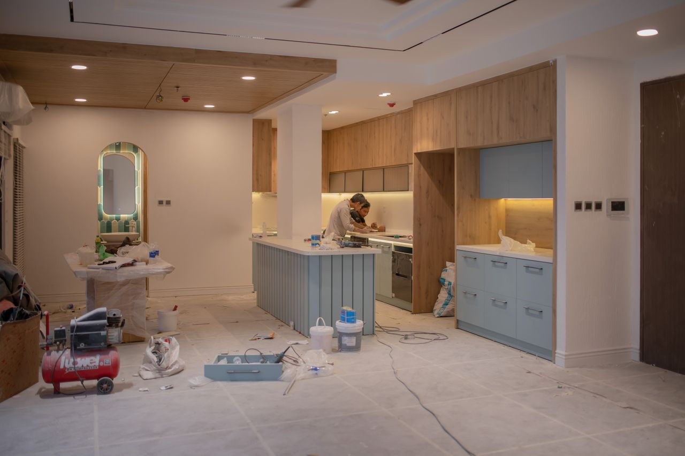

Pose de cuisine complète
Montage des caissons, réglage des portes, fixation des meubles hauts, fileurs et plinthes ajustés.
Votre cuisine posée au millimètre, vos stores installés dans la foulée.
Vous avez acheté votre cuisine, en magasin ou en ligne ? On la monte, on l'ajuste et on la raccorde. Et pour l'été, stores bannes et volets roulants motorisés, posés par les mêmes équipes.
Une cuisine standard est posée en 2 à 4 jours.

Cliquez sur votre situation : le formulaire se remplit tout seul.
Nos poses
Montage des caissons, réglage des portes, fixation des meubles hauts, fileurs et plinthes ajustés.
Stratifié, bois, quartz : découpes d'évier, de plaque et de crédence faites sur place, joints propres.
Évier, lave-vaisselle, hotte, plaque et four raccordés et testés avant notre départ.
Stores sur mesure pour terrasses et balcons, motorisation et capteur vent-soleil en option.
Remplacement ou motorisation de volets existants, commande murale, télécommande ou smartphone.
Enrouleurs, vénitiens, plissés ou bateaux, mesurés et posés dans toutes les pièces.
Comment ça se passe
Envoyez le plan de votre cuisine ou la référence de vos stores.
On vérifie les murs, les niveaux, les arrivées d'eau et d'électricité.
Pose, découpes, raccordements : tout est détaillé, prix ferme.
Tout est testé avec vous avant notre départ, emballages évacués.
Réalisations récentes
Aix-en-Provence · Appartement
Venelles · Villa
Marseille 8e · Maison
Nos engagements
Marc Ferrer, gérant, poseur depuis 2006
« Cuisine achetée en ligne, posée en trois jours. Les portes sont parfaitement alignées, et ils ont tout raccordé. »
« Le store banne a changé notre été. Pose propre, motorisation expliquée, rien à reprocher. »
Questions fréquentes
Votre question n'est pas là ?
Appelez-nous au 04 65 71 86 30.
Oui, c'est une grande partie de notre activité. Nous montons et posons les cuisines de toutes marques, livrées en kit ou déjà montées.
Le prix dépend du nombre de meubles, des découpes du plan de travail et des raccordements. Après le métré, vous recevez un devis ferme et détaillé.
Entre deux et quatre jours pour une cuisine standard. Un îlot ou un plan de travail en pierre peut ajouter un jour.
Oui pour les raccordements de la cuisine : évier, lave-vaisselle, hotte, plaque, four. Si une arrivée doit être déplacée, nous vous le signalons au métré.
Sur une maison, une déclaration en mairie peut être demandée selon votre commune. En copropriété, l'accord du syndic est souvent nécessaire. On vous aide à vérifier.
Souvent oui, en remplaçant le treuil par un moteur tubulaire. On vérifie le coffre et le tablier lors du métré.
Devis gratuit
Cuisine, stores ou les deux : décrivez-nous votre besoin. On vous rappelle pour fixer le métré, gratuit et sans engagement.
Du lundi au samedi matin, 8 h à 18 h
5 chemin de la Blanque, 13090 Aix-en-Provence
Nous intervenons à Aix-en-Provence, Marseille, Gardanne, Vitrolles, Les Milles, Venelles, Bouc-Bel-Air, Trets, Éguilles, Pertuis.